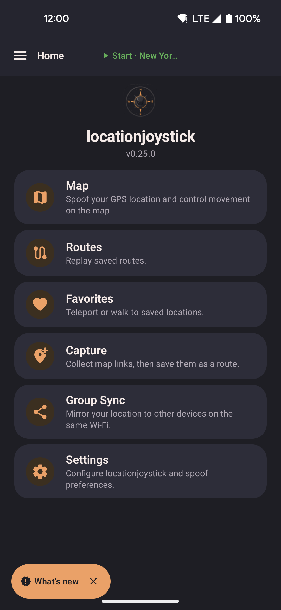

Getting Started
Install locationjoystick, grant three permissions, and start your first fake GPS walk.
Install
- Download the latest APK from GitHub Releases.
- Open the downloaded file. If Android asks you to "Allow installs from unknown sources", turn it on for your browser or file manager, then try again.
- Google Play Protect may show "App scan recommended". It appears for any app installed outside the Play Store. Tap Install without scanning, or scan first.
First-run setup
When you open the app for the first time, it guides you through five setup steps:
-
Location permission
Grant Precise location.
-
Overlay permission
Grant Display over other apps. The app opens Settings; turn on locationjoystick in the list.
-
Mock location provider
Turn on Developer Options: go to Settings → About phone and tap Build number seven times. Then go to Settings → Developer Options → Select mock location app and choose locationjoystick. Tap Check again in the app. See Troubleshooting if this step fails.
-
Compass orientation (optional)
Tap to Walk reads your game's compass direction. Turn it on in Accessibility settings, or skip it. Everything works without it.
-
All done
Setup ends and the Map screen opens.
Start spoofing
Tap Map, tap the start button, then tap or long-press the map to move.

- The Home screen links to Map, Routes, Favorites, Capture, Group Sync, and Settings.
- The button at the top starts and stops spoofing. When off, it shows where you will start.
Source
github.com/shortcuts/locationjoystick. Free, open source, MIT license. See Acknowledgements for third-party credits.